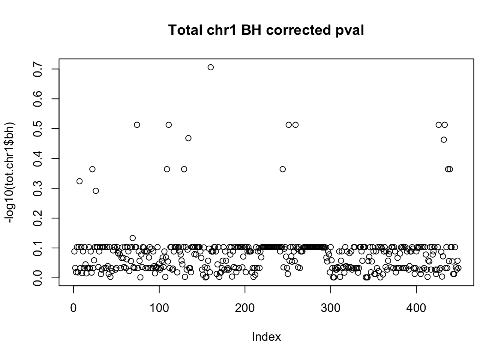

APAqtls with Leafcutter
Briana Mittleman
8/15/2018
Last updated: 2019-02-15
Checks: 6 0
Knit directory: threeprimeseq/analysis/
This reproducible R Markdown analysis was created with workflowr (version 1.2.0). The Report tab describes the reproducibility checks that were applied when the results were created. The Past versions tab lists the development history.
Great! Since the R Markdown file has been committed to the Git repository, you know the exact version of the code that produced these results.
Great job! The global environment was empty. Objects defined in the global environment can affect the analysis in your R Markdown file in unknown ways. For reproduciblity it’s best to always run the code in an empty environment.
The command set.seed(12345) was run prior to running the code in the R Markdown file. Setting a seed ensures that any results that rely on randomness, e.g. subsampling or permutations, are reproducible.
Great job! Recording the operating system, R version, and package versions is critical for reproducibility.
Nice! There were no cached chunks for this analysis, so you can be confident that you successfully produced the results during this run.
Great! You are using Git for version control. Tracking code development and connecting the code version to the results is critical for reproducibility. The version displayed above was the version of the Git repository at the time these results were generated.
Note that you need to be careful to ensure that all relevant files for the analysis have been committed to Git prior to generating the results (you can use wflow_publish or wflow_git_commit). workflowr only checks the R Markdown file, but you know if there are other scripts or data files that it depends on. Below is the status of the Git repository when the results were generated:
Ignored files:
Ignored: .DS_Store
Ignored: .Rhistory
Ignored: .Rproj.user/
Ignored: data/.DS_Store
Ignored: data/perm_QTL_trans_noMP_5percov/
Ignored: output/.DS_Store
Untracked files:
Untracked: KalistoAbundance18486.txt
Untracked: analysis/4suDataIGV.Rmd
Untracked: analysis/DirectionapaQTL.Rmd
Untracked: analysis/EvaleQTLs.Rmd
Untracked: analysis/YL_QTL_test.Rmd
Untracked: analysis/ncbiRefSeq_sm.sort.mRNA.bed
Untracked: analysis/snake.config.notes.Rmd
Untracked: analysis/verifyBAM.Rmd
Untracked: analysis/verifybam_dubs.Rmd
Untracked: code/PeaksToCoverPerReads.py
Untracked: code/strober_pc_pve_heatmap_func.R
Untracked: data/18486.genecov.txt
Untracked: data/APApeaksYL.total.inbrain.bed
Untracked: data/ApaQTLs/
Untracked: data/ChromHmmOverlap/
Untracked: data/DistTXN2Peak_genelocAnno/
Untracked: data/GM12878.chromHMM.bed
Untracked: data/GM12878.chromHMM.txt
Untracked: data/LianoglouLCL/
Untracked: data/LocusZoom/
Untracked: data/NuclearApaQTLs.txt
Untracked: data/PeakCounts/
Untracked: data/PeakCounts_noMP_5perc/
Untracked: data/PeakCounts_noMP_genelocanno/
Untracked: data/PeakUsage/
Untracked: data/PeakUsage_noMP/
Untracked: data/PeakUsage_noMP_GeneLocAnno/
Untracked: data/PeaksUsed/
Untracked: data/PeaksUsed_noMP_5percCov/
Untracked: data/RNAkalisto/
Untracked: data/RefSeq_annotations/
Untracked: data/TotalApaQTLs.txt
Untracked: data/Totalpeaks_filtered_clean.bed
Untracked: data/UnderstandPeaksQC/
Untracked: data/WASP_STAT/
Untracked: data/YL-SP-18486-T-combined-genecov.txt
Untracked: data/YL-SP-18486-T_S9_R1_001-genecov.txt
Untracked: data/YL_QTL_test/
Untracked: data/apaExamp/
Untracked: data/apaQTL_examp_noMP/
Untracked: data/bedgraph_peaks/
Untracked: data/bin200.5.T.nuccov.bed
Untracked: data/bin200.Anuccov.bed
Untracked: data/bin200.nuccov.bed
Untracked: data/clean_peaks/
Untracked: data/comb_map_stats.csv
Untracked: data/comb_map_stats.xlsx
Untracked: data/comb_map_stats_39ind.csv
Untracked: data/combined_reads_mapped_three_prime_seq.csv
Untracked: data/diff_iso_GeneLocAnno/
Untracked: data/diff_iso_proc/
Untracked: data/diff_iso_trans/
Untracked: data/ensemble_to_genename.txt
Untracked: data/example_gene_peakQuant/
Untracked: data/explainProtVar/
Untracked: data/filtPeakOppstrand_cov_noMP_GeneLocAnno_5perc/
Untracked: data/filtered_APApeaks_merged_allchrom_refseqTrans.closest2End.bed
Untracked: data/filtered_APApeaks_merged_allchrom_refseqTrans.closest2End.noties.bed
Untracked: data/first50lines_closest.txt
Untracked: data/gencov.test.csv
Untracked: data/gencov.test.txt
Untracked: data/gencov_zero.test.csv
Untracked: data/gencov_zero.test.txt
Untracked: data/gene_cov/
Untracked: data/joined
Untracked: data/leafcutter/
Untracked: data/merged_combined_YL-SP-threeprimeseq.bg
Untracked: data/molPheno_noMP/
Untracked: data/mol_overlap/
Untracked: data/mol_pheno/
Untracked: data/nom_QTL/
Untracked: data/nom_QTL_opp/
Untracked: data/nom_QTL_trans/
Untracked: data/nuc6up/
Untracked: data/nuc_10up/
Untracked: data/other_qtls/
Untracked: data/pQTL_otherphen/
Untracked: data/peakPerRefSeqGene/
Untracked: data/perm_QTL/
Untracked: data/perm_QTL_GeneLocAnno_noMP_5percov/
Untracked: data/perm_QTL_GeneLocAnno_noMP_5percov_3UTR/
Untracked: data/perm_QTL_opp/
Untracked: data/perm_QTL_trans/
Untracked: data/perm_QTL_trans_filt/
Untracked: data/protAndAPAAndExplmRes.Rda
Untracked: data/protAndAPAlmRes.Rda
Untracked: data/protAndExpressionlmRes.Rda
Untracked: data/reads_mapped_three_prime_seq.csv
Untracked: data/smash.cov.results.bed
Untracked: data/smash.cov.results.csv
Untracked: data/smash.cov.results.txt
Untracked: data/smash_testregion/
Untracked: data/ssFC200.cov.bed
Untracked: data/temp.file1
Untracked: data/temp.file2
Untracked: data/temp.gencov.test.txt
Untracked: data/temp.gencov_zero.test.txt
Untracked: data/threePrimeSeqMetaData.csv
Untracked: data/threePrimeSeqMetaData55Ind.txt
Untracked: data/threePrimeSeqMetaData55Ind.xlsx
Untracked: data/threePrimeSeqMetaData55Ind_noDup.txt
Untracked: data/threePrimeSeqMetaData55Ind_noDup.xlsx
Untracked: data/threePrimeSeqMetaData55Ind_noDup_WASPMAP.txt
Untracked: data/threePrimeSeqMetaData55Ind_noDup_WASPMAP.xlsx
Untracked: output/picard/
Untracked: output/plots/
Untracked: output/qual.fig2.pdf
Unstaged changes:
Modified: analysis/28ind.peak.explore.Rmd
Modified: analysis/CompareLianoglouData.Rmd
Modified: analysis/NewPeakPostMP.Rmd
Modified: analysis/apaQTLoverlapGWAS.Rmd
Modified: analysis/cleanupdtseq.internalpriming.Rmd
Modified: analysis/coloc_apaQTLs_protQTLs.Rmd
Modified: analysis/dif.iso.usage.leafcutter.Rmd
Modified: analysis/diff_iso_pipeline.Rmd
Modified: analysis/explainpQTLs.Rmd
Modified: analysis/explore.filters.Rmd
Modified: analysis/flash2mash.Rmd
Modified: analysis/mispriming_approach.Rmd
Modified: analysis/overlapMolQTL.Rmd
Modified: analysis/overlapMolQTL.opposite.Rmd
Modified: analysis/overlap_qtls.Rmd
Modified: analysis/peakOverlap_oppstrand.Rmd
Modified: analysis/peakQCPPlots.Rmd
Modified: analysis/pheno.leaf.comb.Rmd
Modified: analysis/pipeline_55Ind.Rmd
Modified: analysis/swarmPlots_QTLs.Rmd
Modified: analysis/test.max2.Rmd
Modified: analysis/test.smash.Rmd
Modified: analysis/understandPeaks.Rmd
Modified: code/Snakefile
Note that any generated files, e.g. HTML, png, CSS, etc., are not included in this status report because it is ok for generated content to have uncommitted changes.
These are the previous versions of the R Markdown and HTML files. If you’ve configured a remote Git repository (see ?wflow_git_remote), click on the hyperlinks in the table below to view them.
| File | Version | Author | Date | Message |
|---|---|---|---|---|
| html | b68140c | brimittleman | 2018-08-23 | Build site. |
| Rmd | f5c2ce2 | brimittleman | 2018-08-23 | work more on locus zoom prob |
| html | b33443c | brimittleman | 2018-08-23 | Build site. |
| Rmd | c1f8d60 | brimittleman | 2018-08-23 | add qtc characteristics |
| html | 886dc9a | brimittleman | 2018-08-23 | Build site. |
| Rmd | dd07e10 | brimittleman | 2018-08-23 | box plot for top snps |
| html | c8f2c7d | brimittleman | 2018-08-22 | Build site. |
| Rmd | 0fbf10b | brimittleman | 2018-08-22 | work on plotting top QTL |
| html | bd21c34 | brimittleman | 2018-08-21 | Build site. |
| Rmd | 5ffffe1 | brimittleman | 2018-08-21 | BH result plots |
| html | b6e6ed9 | brimittleman | 2018-08-21 | Build site. |
| Rmd | 73516a6 | brimittleman | 2018-08-21 | chr1 results |
| html | d682ab6 | brimittleman | 2018-08-21 | Build site. |
| Rmd | a3c44fb | brimittleman | 2018-08-21 | add code for permute fastqtl |
| html | 5564e25 | brimittleman | 2018-08-20 | Build site. |
| Rmd | 6b1b51c | brimittleman | 2018-08-20 | start qtl analsis, add to index |
I need to run fastQTL to call the apaQTLs.
Imputed snp: /project2/yangili1/tonyzeng/genotyping/imputation_results/ `
module load samtools
#zip file
gzip filtered_APApeaks_merged_allchrom_refseqGenes_pheno_Total.txt
module load python
#leafcutter script
python /project2/gilad/briana/threeprimeseq/code/prepare_phenotype_table.py filtered_APApeaks_merged_allchrom_refseqGenes_pheno_Total.txt.gz
#source activate three-prime-env
sh filtered_APApeaks_merged_allchrom_refseqGenes_pheno_Total.txt.gz_prepare.sh
#run for nuclear as well
gzip filtered_APApeaks_merged_allchrom_refseqGenes_pheno_Nuclear.txt
#unload anaconda, load python
python /project2/gilad/briana/threeprimeseq/code/prepare_phenotype_table.py filtered_APApeaks_merged_allchrom_refseqGenes_pheno_Nuclear.txt.gz
#load anaconda and env.
sh filtered_APApeaks_merged_allchrom_refseqGenes_pheno_Nuclear.txt.gz_prepare.sh
#filtered_APApeaks_merged_allchrom_refseqGenes_pheno_Total.txt.gz.PCs
#filtered_APApeaks_merged_allchrom_refseqGenes_pheno_Nuclear.txt.gz.PCs
makeSamplelist.py
#make a sample list
fout = file("/project2/gilad/briana/threeprimeseq/data/filt_peak_refGene_cov/SAMPLE.txt",'w')
for ln in open("/project2/gilad/briana/threeprimeseq/data/filt_peak_refGene_cov/file_id_mapping_nuc.txt", "r"):
bam, sample = ln.split()
line=sample[:-2]
fout.write("NA"+line + "\n")
fout.close()
APAqtl_nominal_nuc.sh
#!/bin/bash
#SBATCH --job-name=APAqtl_nominal_nuc
#SBATCH --account=pi-yangili1
#SBATCH --time=24:00:00
#SBATCH --output=APAqtl_nominal_nuc.out
#SBATCH --error=APAqtl_nominal_nuc.err
#SBATCH --partition=broadwl
#SBATCH --mem=12G
#SBATCH --mail-type=END
for i in 1 2 3 4 5 6 7 8 9 10 11 12 13 14 15 16 17 18 19 20 21 22
do
/home/brimittleman/software/bin/FastQTL/bin/fastQTL.static --vcf /project2/gilad/briana/YRI_geno_hg19/chr$i.dose.filt.vcf.gz --cov /project2/gilad/briana/threeprimeseq/data/filt_peak_refGene_cov/filtered_APApeaks_merged_allchrom_refseqGenes_pheno_Nuclear.txt.gz.2PCs --bed /project2/gilad/briana/threeprimeseq/data/filt_peak_refGene_cov/filtered_APApeaks_merged_allchrom_refseqGenes_pheno_Nuclear.txt.gz.qqnorm_chr$i.gz --out /project2/gilad/briana/threeprimeseq/data/nominal_APAqtl/filtered_APApeaks_merged_allchrom_refseqGenes_pheno_Nuclear.txt.gz.qqnorm_chr$i.nominal.out --chunk 1 1 --window 5e4 --include-samples /project2/gilad/briana/threeprimeseq/data/filt_peak_refGene_cov/SAMPLE.txt
done
Remove the non matching ind. from the sample list.
Remove 18500, 19092 and 19193, 18497
Try it on the total ones:
APAqtl_nominal_tot.sh
#!/bin/bash
#SBATCH --job-name=APAqtl_nominal_tot
#SBATCH --account=pi-yangili1
#SBATCH --time=24:00:00
#SBATCH --output=APAqtl_nominal_tot.out
#SBATCH --error=APAqtl_nominal_tot.err
#SBATCH --partition=broadwl
#SBATCH --mem=12G
#SBATCH --mail-type=END
for i in 1 2 3 4 5 6 7 8 9 10 11 12 13 14 15 16 17 18 19 20 21 22
do
/home/brimittleman/software/bin/FastQTL/bin/fastQTL.static --vcf /project2/gilad/briana/YRI_geno_hg19/chr$i.dose.filt.vcf.gz --cov /project2/gilad/briana/threeprimeseq/data/filt_peak_refGene_cov/filtered_APApeaks_merged_allchrom_refseqGenes_pheno_Total.txt.gz.2PCs --bed /project2/gilad/briana/threeprimeseq/data/filt_peak_refGene_cov/filtered_APApeaks_merged_allchrom_refseqGenes_pheno_Total.txt.gz.qqnorm_chr$i.gz --out /project2/gilad/briana/threeprimeseq/data/nominal_APAqtl/filtered_APApeaks_merged_allchrom_refseqGenes_pheno_Total.txt.gz.qqnorm_chr$i.nominal.out --chunk 1 1 --window 5e4 --include-samples /project2/gilad/briana/threeprimeseq/data/filt_peak_refGene_cov/SAMPLE.txt
done
Filter dose files
I need to remove non snps and snps with <.05 from the dosage file.
I will first copy all of the dosage files to my direcory instead of changing tonys.
cp *dose.vcf.gz /project2/gilad/briana/YRI_geno_hg19/I want to write a python script that will read in the files and perform the filters.
I wrote a python script that take in the dose file and a name of an out file. I will write a bash script to wrap this on all of the chrs.
#!/bin/bash
#SBATCH --job-name=filter_dose
#SBATCH --account=pi-yangili1
#SBATCH --time=24:00:00
#SBATCH --output=filter_dose.out
#SBATCH --error=filter_dose.err
#SBATCH --partition=broadwl
#SBATCH --mem=12G
#SBATCH --mail-type=END
module load python
for i in 1 2 3 4 5 6 7 8 9 10 11 12 13 14 15 16 17 18 19 20 21 22
do
python filter_vcf.py chr$i.dose.vcf chr$i.dose.filt.vcf
doneNow I can use these for the fastqtl script instead.
I also updated to only use the first 2 pcs as covariates.
Run permuted version
Permutation pass to calculate correctedp-values for molecular phenotypes.
APAqtl_perm_tot.sh
#!/bin/bash
#SBATCH --job-name=APAqtl_perm_tot
#SBATCH --account=pi-yangili1
#SBATCH --time=24:00:00
#SBATCH --output=APAqtl_perm_tot.out
#SBATCH --error=APAqtl_perm_tot.err
#SBATCH --partition=broadwl
#SBATCH --mem=12G
#SBATCH --mail-type=END
for i in 1 2 3 4 5 6 7 8 9 10 11 12 13 14 15 16 17 18 19 20 21 22
do
/home/brimittleman/software/bin/FastQTL/bin/fastQTL.static --permute 1000 --vcf /project2/gilad/briana/YRI_geno_hg19/chr$i.dose.filt.vcf.gz --cov /project2/gilad/briana/threeprimeseq/data/filt_peak_refGene_cov/filtered_APApeaks_merged_allchrom_refseqGenes_pheno_Total.txt.gz.2PCs --bed /project2/gilad/briana/threeprimeseq/data/filt_peak_refGene_cov/filtered_APApeaks_merged_allchrom_refseqGenes_pheno_Total.txt.gz.qqnorm_chr$i.gz --out /project2/gilad/briana/threeprimeseq/data/perm_APAqtl/filtered_APApeaks_merged_allchrom_refseqGenes_pheno_Total.txt.gz.qqnorm_chr$i.perm.out --chunk 1 1 --window 5e4 --include-samples /project2/gilad/briana/threeprimeseq/data/filt_peak_refGene_cov/SAMPLE.txt
done
APAqtl_perm_nuc.sh
#!/bin/bash
#SBATCH --job-name=APAqtl_nominal_nuc
#SBATCH --account=pi-yangili1
#SBATCH --time=24:00:00
#SBATCH --output=APAqtl_perm_nuc.out
#SBATCH --error=APAqtl_perm_nuc.err
#SBATCH --partition=broadwl
#SBATCH --mem=12G
#SBATCH --mail-type=END
for i in 1 2 3 4 5 6 7 8 9 10 11 12 13 14 15 16 17 18 19 20 21 22
do
/home/brimittleman/software/bin/FastQTL/bin/fastQTL.static --permute 1000 --vcf /project2/gilad/briana/YRI_geno_hg19/chr$i.dose.filt.vcf.gz --cov /project2/gilad/briana/threeprimeseq/data/filt_peak_refGene_cov/filtered_APApeaks_merged_allchrom_refseqGenes_pheno_Nuclear.txt.gz.2PCs --bed /project2/gilad/briana/threeprimeseq/data/filt_peak_refGene_cov/filtered_APApeaks_merged_allchrom_refseqGenes_pheno_Nuclear.txt.gz.qqnorm_chr$i.gz --out /project2/gilad/briana/threeprimeseq/data/perm_APAqtl/filtered_APApeaks_merged_allchrom_refseqGenes_pheno_Nuclear.txt.gz.qqnorm_chr$i.perm.out --chunk 1 1 --window 5e4 --include-samples /project2/gilad/briana/threeprimeseq/data/filt_peak_refGene_cov/SAMPLE.txt
done
Try with normal approximation for the chroms that dont work:
APAqtl_perm_norm_tot.sh
#!/bin/bash
#SBATCH --job-name=APAqtl_perm_tot
#SBATCH --account=pi-yangili1
#SBATCH --time=24:00:00
#SBATCH --output=APAqtl_perm_tot.out
#SBATCH --error=APAqtl_perm_tot.err
#SBATCH --partition=broadwl
#SBATCH --mem=12G
#SBATCH --mail-type=END
for i in 13 18
do
/home/brimittleman/software/bin/FastQTL/bin/fastQTL.static --permute 1000 --normal --vcf /project2/gilad/briana/YRI_geno_hg19/chr$i.dose.filt.vcf.gz --cov /project2/gilad/briana/threeprimeseq/data/filt_peak_refGene_cov/filtered_APApeaks_merged_allchrom_refseqGenes_pheno_Total.txt.gz.2PCs --bed /project2/gilad/briana/threeprimeseq/data/filt_peak_refGene_cov/filtered_APApeaks_merged_allchrom_refseqGenes_pheno_Total.txt.gz.qqnorm_chr$i.gz --out /project2/gilad/briana/threeprimeseq/data/perm_APAqtl/filtered_APApeaks_merged_allchrom_refseqGenes_pheno_Total.txt.gz.qqnorm_chr$i.perm.norm.out --chunk 1 1 --window 5e4 --include-samples /project2/gilad/briana/threeprimeseq/data/filt_peak_refGene_cov/SAMPLE.txt
done
APAqtl_perm_norm_nuc.sh
#!/bin/bash
#SBATCH --job-name=APAqtl_nominal_nuc
#SBATCH --account=pi-yangili1
#SBATCH --time=24:00:00
#SBATCH --output=APAqtl_perm_nuc.out
#SBATCH --error=APAqtl_perm_nuc.err
#SBATCH --partition=broadwl
#SBATCH --mem=12G
#SBATCH --mail-type=END
for i in 3 13
do
/home/brimittleman/software/bin/FastQTL/bin/fastQTL.static --permute 1000 --normal --vcf /project2/gilad/briana/YRI_geno_hg19/chr$i.dose.filt.vcf.gz --cov /project2/gilad/briana/threeprimeseq/data/filt_peak_refGene_cov/filtered_APApeaks_merged_allchrom_refseqGenes_pheno_Nuclear.txt.gz.2PCs --bed /project2/gilad/briana/threeprimeseq/data/filt_peak_refGene_cov/filtered_APApeaks_merged_allchrom_refseqGenes_pheno_Nuclear.txt.gz.qqnorm_chr$i.gz --out /project2/gilad/briana/threeprimeseq/data/perm_APAqtl/filtered_APApeaks_merged_allchrom_refseqGenes_pheno_Nuclear.txt.gz.qqnorm_chr$i.perm.norm.out --chunk 1 1 --window 5e4 --include-samples /project2/gilad/briana/threeprimeseq/data/filt_peak_refGene_cov/SAMPLE.txt
doneEvaluate the results
The results file has the folowing columns:
- ID of the tested molecular phenotype (in this particular case, the gene ID)
- Number of variants tested in cis for this phenotype
- MLE of the shape1 parameter of the Beta distribution
- MLE of the shape2 parameter of the Beta distribution
- Dummy [To be described later]
- ID of the best variant found for this molecular phenotypes (i.e. with the smallest p-value)
- Distance between the molecular phenotype - variant pair
- The nominal p-value of association that quantifies how significant from 0, the regression coefficient is
- The slope associated with the nominal p-value of association [only in version > v2-184]
- A first permutation p-value directly obtained from the permutations with the direct method. This is basically a corrected version of the nominal p-value that accounts for the fact that multiple variants are tested per molecular phenotype.
- A second permutation p-value obtained via beta approximation. We advice to use this one in any downstream analysis.
I can check the experiments as recomended by the FastQTL site.
d = read.table("permutations.all.chunks.txt.gz", hea=F, stringsAsFactors=F)
colnames(d) = c("pid", "nvar", "shape1", "shape2", "dummy", "sid", "dist", "npval", "ppval", "bpval")
plot(d$ppval, d$bpval, xlab="Direct method", ylab="Beta approximation", main="Check plot")
abline(0, 1, col="red")I will try this first on the resutls from chr1.
nuc.chr1= read.table("../data/perm_QTL/filtered_APApeaks_merged_allchrom_refseqGenes_pheno_Nuclear.txt.gz.qqnorm_chr1.perm.out",head=F, stringsAsFactors=F, col.names = c("pid", "nvar", "shape1", "shape2", "dummy", "sid", "dist", "npval", "slope", "ppval", "bpval"))
plot(nuc.chr1$ppval, nuc.chr1$bpval, xlab="Direct method", ylab="Beta approximation", main="Nuclear Check plot")
abline(0, 1, col="red")
tot.chr1=read.table("../data/perm_QTL/filtered_APApeaks_merged_allchrom_refseqGenes_pheno_Total.txt.gz.qqnorm_chr1.perm.out", head=F, stringsAsFactors = F, col.names= c("pid", "nvar", "shape1", "shape2", "dummy", "sid", "dist", "npval", "slope", "ppval", "bpval"))
plot(tot.chr1$ppval, tot.chr1$bpval, xlab="Direct method", ylab="Beta approximation", main="Total Check plot")
abline(0, 1, col="red")
Correct for multiple testing:
- Bonferonni
nuc.chr1$bonferroni = p.adjust(nuc.chr1$bpval, method="bonferroni")
plot(-log10(nuc.chr1$bonferroni), main="Nuclear chr1 bonferroni corrected pval")
tot.chr1$bonferroni = p.adjust(tot.chr1$bpval, method="bonferroni")
plot(-log10(tot.chr1$bonferroni), main="Total chr1 bonferroni corrected pval")
< .05 is 1.3 on this plot.
- BH
nuc.chr1$bh=p.adjust(nuc.chr1$bpval, method="fdr")
plot(-log10(nuc.chr1$bh), main="Nuclear chr1 BH corrected pval")
tot.chr1$bh=p.adjust(tot.chr1$bpval, method="fdr")
plot(-log10(tot.chr1$bh), main="Total chr1 BH corrected pval")
10% FDR is 1 on this plot.
Extend to all results:
nuc.res= read.table("../data/perm_QTL/filtered_APApeaks_merged_allchrom_refseqGenes_pheno_Nuclear_permQTLresults.out",head=F, stringsAsFactors=F, col.names = c("pid", "nvar", "shape1", "shape2", "dummy", "sid", "dist", "npval", "slope", "ppval", "bpval"))
plot(nuc.res$ppval, nuc.res$bpval, xlab="Direct method", ylab="Beta approximation", main="Nuclear Check plot")
abline(0, 1, col="red")
| Version | Author | Date |
|---|---|---|
| c8f2c7d | brimittleman | 2018-08-22 |
tot.res=read.table("../data/perm_QTL/filtered_APApeaks_merged_allchrom_refseqGenes_pheno_Total_permQTLresults.out", head=F, stringsAsFactors = F, col.names= c("pid", "nvar", "shape1", "shape2", "dummy", "sid", "dist", "npval", "slope", "ppval", "bpval"))
plot(tot.res$ppval, tot.res$bpval, xlab="Direct method", ylab="Beta approximation", main="Total Check plot")
abline(0, 1, col="red")
| Version | Author | Date |
|---|---|---|
| c8f2c7d | brimittleman | 2018-08-22 |
- BH
nuc.res$bh=p.adjust(nuc.res$bpval, method="fdr")
plot(-log10(nuc.res$bh), main="Nuclear BH corrected pval")
abline(h=1, col="red")
| Version | Author | Date |
|---|---|---|
| c8f2c7d | brimittleman | 2018-08-22 |
tot.res$bh=p.adjust(tot.res$bpval, method="fdr")
plot(-log10(tot.res$bh), main="Total BH corrected pval")
abline(h=1, col="red")
| Version | Author | Date |
|---|---|---|
| c8f2c7d | brimittleman | 2018-08-22 |
Next steps:
make plots for some of these snps
- /project2/yangili1/yangili/APAqtl/output/ceu.apaqtl.txt.gz.bh.txt (use nominal pvalue)
- plot a qqplot with only these SNPs
- plot a qqplot with only these SNPs
- plot a qqplot with all SNPs that you tested
library(tidyverse)── Attaching packages ───────────────────────────────────────────────────────────── tidyverse 1.2.1 ──✔ ggplot2 3.0.0 ✔ purrr 0.2.5
✔ tibble 1.4.2 ✔ dplyr 0.7.6
✔ tidyr 0.8.1 ✔ stringr 1.4.0
✔ readr 1.1.1 ✔ forcats 0.3.0Warning: package 'stringr' was built under R version 3.5.2── Conflicts ──────────────────────────────────────────────────────────────── tidyverse_conflicts() ──
✖ dplyr::filter() masks stats::filter()
✖ dplyr::lag() masks stats::lag()library(workflowr)This is workflowr version 1.2.0
Run ?workflowr for help getting startedlibrary(reshape2)
Attaching package: 'reshape2'The following object is masked from 'package:tidyr':
smithslibrary(cowplot)
Attaching package: 'cowplot'The following object is masked from 'package:ggplot2':
ggsaveceu_QTL=read.table("../data/nom_QTL/ceu.apaqtl.txt.gz.bh.txt", header = T, stringsAsFactors = F)
nom_nuc=read.table("../data/nom_QTL/filtered_APApeaks_merged_allchrom_refseqGenes_pheno_Nuclear_nomQTLresults.out", head=F, stringsAsFactors = F, col.names = c("peakID", "snpID", "dist", "Nuc_pval", "slope"))
nom_tot=read.table("../data/nom_QTL/filtered_APApeaks_merged_allchrom_refseqGenes_pheno_Total_nomQTLresults.out",head=F , stringsAsFactors = F, col.names = c("peakID", "snpID", "dist", "tot_pval", "slope"))First I want to filter the CEU data just for snps. Then I want to reformat them to be in the same configuration as the nps in my results.
chr#:pos
ceu_QTL_snp=ceu_QTL %>% filter(grepl("snp", dummy2)) %>% separate(dummy2, c("type", "chr", "loc"), sep="_") %>% unite(snpID, c("chr", "loc"), sep=":")Join the data frames by the snp ID.
ceuAndTot= ceu_QTL_snp %>% inner_join(nom_tot, by="snpID") %>% select(snpID, bpval, tot_pval)
ceuAndNuc= ceu_QTL_snp %>% inner_join(nom_nuc, by="snpID") %>% select(snpID, bpval, Nuc_pval)tot_ceuSNPS=runif(nrow(ceuAndTot))
nuc_ceuSNPS=runif(nrow(ceuAndNuc))par(mfrow=c(1,2))
qqplot(-log10(tot_ceuSNPS), -log10(ceuAndTot$tot_pval), ylab="-log10 Total pvalues", xlab="Uniform expectation", main="Total pvalues for in CEU snps")
abline(0,1)
qqplot(-log10(nuc_ceuSNPS), -log10(ceuAndNuc$Nuc_pva), ylab="-log10 Nuclear pvalues", xlab="Uniform expectation", main="Nuclear pvalues for in CEU snps")
abline(0,1)
| Version | Author | Date |
|---|---|---|
| c8f2c7d | brimittleman | 2018-08-22 |
Try with all of the snps:
par(mfrow=c(1,2))
qqplot(-log10(runif(nrow(nom_tot))), -log10(nom_tot$tot_pval), ylab="-log10 Total pvalue", xlab="Uniform expectation", main="Total pvalues for all snps")
abline(0,1)
qqplot(-log10(runif(nrow(nom_nuc))), -log10(nom_nuc$Nuc_pval), ylab="-log10 Nuclear pvalue", xlab="Uniform expectation",main= "Nuclear pvalues for all snps")
abline(0,1)
| Version | Author | Date |
|---|---|---|
| c8f2c7d | brimittleman | 2018-08-22 |
Try this with te permuted pvalues:
par(mfrow=c(1,2))
qqplot(-log10(runif(nrow(tot.res))), -log10(tot.res$bpval),ylab="-log10 Total permuted pvalue", xlab="Uniform expectation", main="Total permuted pvalues for all snps")
abline(0,1)
qqplot(-log10(runif(nrow(nuc.res))), -log10(nuc.res$bpval), ylab="-log10 Nuclear permuted pvalue", xlab="Uniform expectation", main="Nuclear permuted pvalues for all snps")
abline(0,1)
| Version | Author | Date |
|---|---|---|
| c8f2c7d | brimittleman | 2018-08-22 |
Locus zoom plots to vizualize the top QTLs:
Kenneth gave me this code for making these plots. I can modify this code.
plot_locuszoom <- function(this, gen, xlim, ylim, ...)
{
#this is a r object that will have the results from the fastqtl and the genotypes
#this$annotations has gene, snp, dist, pvalue, beta, rsid, chr, pos, bpval, and other extra annotations about the snps
rbPal <- colorRampPalette(c('lightblue','blue','purple','red'))(101)
cols <- c()
# gotta figure out how everythign correlates with this snp
# row <- which(this$annotations$rsid==snp)
# gen <- as.numeric(this$genotypes[row,10:129])
nrow <- nrow(this$annotations)
cors <- sapply(1:nrow, function(j) cor(gen, as.numeric(this$genotypes[j,10:33])))
cols <- c()
for (j in 1:nrow) cols[j] <- rbPal[round(100*(cors[j])^2)+1]
plot.new()
plot.window(xlim=xlim, ylim=ylim, xlab='position', ylab='-log10(p-value)', ...)
points(x=this$annotations$pos, y=-log(this$annotations$bpval,10), pch=19, col=cols)
axis(2)
box()
mtext('-log10(p-value)', side=2, line=2, cex=0.7)
}I will try this with the top total snp first. It is in chrom15, the snip id is 15:76191353. I want to pull genotypes for snp within 50000 bases (window size).
I can write a python script that takes a snp position and filters only the snps 25000 up and 25000 downstream of this snp. I can subset just the individuals in the sample list once i move this into R.
Need to make sure to unzip the specfici vcf file first.
python filter_geno.py 15 76191353 /project2/gilad/briana/threeprimeseq/data/filtered_geno/chrom15pos76191353.vcf
samples=c("NA18486","NA18505", 'NA18508','NA18511','NA18519','NA18520','NA18853','NA18858','NA18861','NA18870','NA18909','NA18916','NA19119','NA19128','NA19130','NA19141','NA19160','NA19209','NA19210','NA19223','NA19225','NA19238','NA19239','NA19257')
chr15.76191353geno=read.table("../data/perm_QTL/chrom15pos76191353.vcf", col.names=c('CHROM', 'POS', 'snpID', 'REF', 'ALT', 'QUAL', 'FILTER', 'INFO', 'FORMAT', 'NA18486', 'NA18487', 'NA18488', 'NA18489', 'NA18498', 'NA18499', 'NA18501', 'NA18502', 'NA18504', 'NA18505', 'NA18507', 'NA18508', 'NA18510', 'NA18511', 'NA18516', 'NA18517', 'NA18519', 'NA18520', 'NA18522', 'NA18523', 'NA18852', 'NA18853', 'NA18855', 'NA18856', 'NA18858', 'NA18859', 'NA18861', 'NA18862', 'NA18867', 'NA18868', 'NA18870', 'NA18871', 'NA18873', 'NA18874', 'NA18907', 'NA18909', 'NA18910', 'NA18912', 'NA18913', 'NA18916', 'NA18917', 'NA18923', 'NA18924', 'NA18933', 'NA18934', 'NA19093', 'NA19095', 'NA19096', 'NA19098', 'NA19099', 'NA19101', 'NA19102', 'NA19107', 'NA19108', 'NA19113', 'NA19114', 'NA19116', 'NA19117', 'NA19118', 'NA19119', 'NA19121', 'NA19122', 'NA19127', 'NA19128', 'NA19129', 'NA19130', 'NA19131', 'NA19137', 'NA19138', 'NA19140', 'NA19141', 'NA19143', 'NA19144', 'NA19146', 'NA19147', 'NA19149', 'NA19150', 'NA19152', 'NA19153', 'NA19159', 'NA19160', 'NA19171', 'NA19172', 'NA19175', 'NA19176', 'NA19184', 'NA19185', 'NA19189', 'NA19190', 'NA19197', 'NA19198', 'NA19200', 'NA19201', 'NA19203', 'NA19204', 'NA19206', 'NA19207', 'NA19209', 'NA19210', 'NA19213', 'NA19214', 'NA19222', 'NA19223', 'NA19225', 'NA19226', 'NA19235', 'NA19236', 'NA19238', 'NA19239', 'NA19247', 'NA19248', 'NA19256', 'NA19257'), stringsAsFactors = F) %>% select(one_of(samples))
chr15.76191353geno_anno=read.table("../data/perm_QTL/chrom15pos76191353.vcf", col.names=c('CHROM', 'POS', 'snpID', 'REF', 'ALT', 'QUAL', 'FILTER', 'INFO', 'FORMAT', 'NA18486', 'NA18487', 'NA18488', 'NA18489', 'NA18498', 'NA18499', 'NA18501', 'NA18502', 'NA18504', 'NA18505', 'NA18507', 'NA18508', 'NA18510', 'NA18511', 'NA18516', 'NA18517', 'NA18519', 'NA18520', 'NA18522', 'NA18523', 'NA18852', 'NA18853', 'NA18855', 'NA18856', 'NA18858', 'NA18859', 'NA18861', 'NA18862', 'NA18867', 'NA18868', 'NA18870', 'NA18871', 'NA18873', 'NA18874', 'NA18907', 'NA18909', 'NA18910', 'NA18912', 'NA18913', 'NA18916', 'NA18917', 'NA18923', 'NA18924', 'NA18933', 'NA18934', 'NA19093', 'NA19095', 'NA19096', 'NA19098', 'NA19099', 'NA19101', 'NA19102', 'NA19107', 'NA19108', 'NA19113', 'NA19114', 'NA19116', 'NA19117', 'NA19118', 'NA19119', 'NA19121', 'NA19122', 'NA19127', 'NA19128', 'NA19129', 'NA19130', 'NA19131', 'NA19137', 'NA19138', 'NA19140', 'NA19141', 'NA19143', 'NA19144', 'NA19146', 'NA19147', 'NA19149', 'NA19150', 'NA19152', 'NA19153', 'NA19159', 'NA19160', 'NA19171', 'NA19172', 'NA19175', 'NA19176', 'NA19184', 'NA19185', 'NA19189', 'NA19190', 'NA19197', 'NA19198', 'NA19200', 'NA19201', 'NA19203', 'NA19204', 'NA19206', 'NA19207', 'NA19209', 'NA19210', 'NA19213', 'NA19214', 'NA19222', 'NA19223', 'NA19225', 'NA19226', 'NA19235', 'NA19236', 'NA19238', 'NA19239', 'NA19247', 'NA19248', 'NA19256', 'NA19257'), stringsAsFactors = F) %>% select(CHROM, POS, snpID, REF, ALT, QUAL, FILTER, INFO, FORMAT)
chr15.76191353geno_dose=apply(chr15.76191353geno, 2, function(y)sapply(y, function(x)as.integer(strsplit(x,":")[[1]][[2]])))
chr15.76191353geno_dose_full=data.frame(cbind(chr15.76191353geno_anno, chr15.76191353geno_dose))
gen=chr15.76191353geno_dose_full[which(chr15.76191353geno_dose_full$POS==76191353),]
gen CHROM POS snpID REF ALT QUAL FILTER
84 15 76191353 15:76191353 C T . PASS
INFO FORMAT NA18486 NA18505 NA18508
84 AF=0.08407;MAF=0.08407;R2=0.99998 GT:DS:GP 0 0 1
NA18511 NA18519 NA18520 NA18853 NA18858 NA18861 NA18870 NA18909 NA18916
84 0 0 0 1 0 0 1 0 0
NA19119 NA19128 NA19130 NA19141 NA19160 NA19209 NA19210 NA19223 NA19225
84 0 0 0 0 0 0 0 0 0
NA19238 NA19239 NA19257
84 0 0 0snps=chr15.76191353geno_dose_full$snpID
in_both_nom= nom_tot %>% filter(snpID %in% snps)
mylist=list(annotations=tot.res,genotypes=chr15.76191353geno_dose_full )
start=76191353 - 25000
end=76191353 + 25000
#plot_locuszoom(mylist, gen, start, end)I actually need to do this with the nominal snps.
The most sig. in the nominal total is 4:186328829:186328922:NM_018359.3_-_peak260565, 4:186325141
I want to run the python genotype filter.
python filter_geno.py 4 186325141 /project2/gilad/briana/threeprimeseq/data/filtered_geno/chrom4pos186325141.vcfchrom4pos18632514=read.table("../data/nom_QTL/chrom4pos186325141.vcf", col.names=c('CHROM', 'POS', 'snpID', 'REF', 'ALT', 'QUAL', 'FILTER', 'INFO', 'FORMAT', 'NA18486', 'NA18487', 'NA18488', 'NA18489', 'NA18498', 'NA18499', 'NA18501', 'NA18502', 'NA18504', 'NA18505', 'NA18507', 'NA18508', 'NA18510', 'NA18511', 'NA18516', 'NA18517', 'NA18519', 'NA18520', 'NA18522', 'NA18523', 'NA18852', 'NA18853', 'NA18855', 'NA18856', 'NA18858', 'NA18859', 'NA18861', 'NA18862', 'NA18867', 'NA18868', 'NA18870', 'NA18871', 'NA18873', 'NA18874', 'NA18907', 'NA18909', 'NA18910', 'NA18912', 'NA18913', 'NA18916', 'NA18917', 'NA18923', 'NA18924', 'NA18933', 'NA18934', 'NA19093', 'NA19095', 'NA19096', 'NA19098', 'NA19099', 'NA19101', 'NA19102', 'NA19107', 'NA19108', 'NA19113', 'NA19114', 'NA19116', 'NA19117', 'NA19118', 'NA19119', 'NA19121', 'NA19122', 'NA19127', 'NA19128', 'NA19129', 'NA19130', 'NA19131', 'NA19137', 'NA19138', 'NA19140', 'NA19141', 'NA19143', 'NA19144', 'NA19146', 'NA19147', 'NA19149', 'NA19150', 'NA19152', 'NA19153', 'NA19159', 'NA19160', 'NA19171', 'NA19172', 'NA19175', 'NA19176', 'NA19184', 'NA19185', 'NA19189', 'NA19190', 'NA19197', 'NA19198', 'NA19200', 'NA19201', 'NA19203', 'NA19204', 'NA19206', 'NA19207', 'NA19209', 'NA19210', 'NA19213', 'NA19214', 'NA19222', 'NA19223', 'NA19225', 'NA19226', 'NA19235', 'NA19236', 'NA19238', 'NA19239', 'NA19247', 'NA19248', 'NA19256', 'NA19257'), stringsAsFactors = F) %>% select(one_of(samples))
chrom4pos18632514_anno=read.table("../data/nom_QTL/chrom4pos186325141.vcf", col.names=c('CHROM', 'POS', 'snpID', 'REF', 'ALT', 'QUAL', 'FILTER', 'INFO', 'FORMAT', 'NA18486', 'NA18487', 'NA18488', 'NA18489', 'NA18498', 'NA18499', 'NA18501', 'NA18502', 'NA18504', 'NA18505', 'NA18507', 'NA18508', 'NA18510', 'NA18511', 'NA18516', 'NA18517', 'NA18519', 'NA18520', 'NA18522', 'NA18523', 'NA18852', 'NA18853', 'NA18855', 'NA18856', 'NA18858', 'NA18859', 'NA18861', 'NA18862', 'NA18867', 'NA18868', 'NA18870', 'NA18871', 'NA18873', 'NA18874', 'NA18907', 'NA18909', 'NA18910', 'NA18912', 'NA18913', 'NA18916', 'NA18917', 'NA18923', 'NA18924', 'NA18933', 'NA18934', 'NA19093', 'NA19095', 'NA19096', 'NA19098', 'NA19099', 'NA19101', 'NA19102', 'NA19107', 'NA19108', 'NA19113', 'NA19114', 'NA19116', 'NA19117', 'NA19118', 'NA19119', 'NA19121', 'NA19122', 'NA19127', 'NA19128', 'NA19129', 'NA19130', 'NA19131', 'NA19137', 'NA19138', 'NA19140', 'NA19141', 'NA19143', 'NA19144', 'NA19146', 'NA19147', 'NA19149', 'NA19150', 'NA19152', 'NA19153', 'NA19159', 'NA19160', 'NA19171', 'NA19172', 'NA19175', 'NA19176', 'NA19184', 'NA19185', 'NA19189', 'NA19190', 'NA19197', 'NA19198', 'NA19200', 'NA19201', 'NA19203', 'NA19204', 'NA19206', 'NA19207', 'NA19209', 'NA19210', 'NA19213', 'NA19214', 'NA19222', 'NA19223', 'NA19225', 'NA19226', 'NA19235', 'NA19236', 'NA19238', 'NA19239', 'NA19247', 'NA19248', 'NA19256', 'NA19257'), stringsAsFactors = F) %>% select(CHROM, POS, snpID, REF, ALT, QUAL, FILTER, INFO, FORMAT)
chrom4pos18632514_dose=apply(chrom4pos18632514, 2, function(y)sapply(y, function(x)as.integer(strsplit(x,":")[[1]][[2]])))
chrom4pos18632514_dose_full=data.frame(cbind(chrom4pos18632514_anno, chrom4pos18632514_dose))
snps=chrom4pos18632514_dose_full$snpID
in_both_nom= nom_tot %>% filter(snpID %in% snps)
gen=chrom4pos18632514_dose_full[which(chrom4pos18632514_dose_full$POS==186325141),]
mylist=list(annotations=in_both_nom,genotypes=chrom4pos18632514_dose_full)
start=18632514- 25000
end=18632514 + 25000
#plot_locuszoom(mylist, gen, start, end)
#problem: the in_both_nom has more values because snps can be associated with more than one peak wTry to make a boxplot:
FIrst for the strongest total pval.
geno=chr15.76191353geno_dose_full[which(chr15.76191353geno_dose_full$POS==76191353),10:33]
# find the phentpye values for peak 15:76234771:76234852:NM_138573.3_-_peak118132
#grep -F "15:76234771:76234852:NM_138573.3_-_peak118132" filtered_APApeaks_merged_allchrom_refseqGenes_pheno_Total.txt.gz.phen_chr15 > ../qtl_example/tot_peak118132
pheno=read.table("../data/perm_QTL/tot_peak118132", stringsAsFactors = F, col.names = c("Chr", "start", "end", "ID", 'NA18486', 'NA18497', 'NA18500', 'NA18505','NA18508' ,'NA18511', 'NA18519', 'NA18520', 'NA18853', 'NA18858', 'NA18861' ,'NA18870', 'NA18909', 'NA18916', 'NA19092', 'NA19119', 'NA19128' ,'NA19130', 'NA19141' ,'NA19160', 'NA19193', 'NA19209' ,'NA19210', 'NA19223' ,'NA19225', 'NA19238', 'NA19239' ,'NA19257')) %>% select(one_of(samples))
for_plot=data.frame(bind_rows(geno,pheno) %>% t)
colnames(for_plot)=c("Genotype", "PAS")
for_plot$Genotype=as.factor(for_plot$Genotype)
ggplot(for_plot, aes(x=Genotype, y=PAS, fill=Genotype, group=Genotype)) + geom_boxplot() + labs(x="Genotype", title="15:76234771:76234852:NM_138573.3_-_peak118132 QTL") + geom_jitter( aes(x=Genotype, y=PAS))
| Version | Author | Date |
|---|---|---|
| b68140c | brimittleman | 2018-08-23 |
Generally I will need to grep the correct line from the geno and pheno file then make the plot like this.
Next I will run for the top Nuc QTL.
peak: 12:9092958:9093051:NM_004426.2_+_peak67056 SNP: 12:9049821
#grep -F "12:9092958:9093051:NM_004426.2_+_peak67056" filtered_APApeaks_merged_allchrom_refseqGenes_pheno_Nuclear.txt.gz.phen_chr12 > ../qtl_example/nuc_peak67056
pheno_names=c("Chr", "start", "end", "ID", 'NA18486', 'NA18497', 'NA18500', 'NA18505','NA18508' ,'NA18511', 'NA18519', 'NA18520', 'NA18853', 'NA18858', 'NA18861' ,'NA18870', 'NA18909', 'NA18916', 'NA19092', 'NA19119', 'NA19128' ,'NA19130', 'NA19141' ,'NA19160', 'NA19193', 'NA19209' ,'NA19210', 'NA19223' ,'NA19225', 'NA19238', 'NA19239' ,'NA19257')
geno_names=c('CHROM', 'POS', 'sid', 'REF', 'ALT', 'QUAL', 'FILTER', 'INFO', 'FORMAT', 'NA18486', 'NA18487', 'NA18488', 'NA18489', 'NA18498', 'NA18499', 'NA18501', 'NA18502', 'NA18504', 'NA18505', 'NA18507', 'NA18508', 'NA18510', 'NA18511', 'NA18516', 'NA18517', 'NA18519', 'NA18520', 'NA18522', 'NA18523', 'NA18852', 'NA18853', 'NA18855', 'NA18856', 'NA18858', 'NA18859', 'NA18861', 'NA18862', 'NA18867', 'NA18868', 'NA18870', 'NA18871', 'NA18873', 'NA18874', 'NA18907', 'NA18909', 'NA18910', 'NA18912', 'NA18913', 'NA18916', 'NA18917', 'NA18923', 'NA18924', 'NA18933', 'NA18934', 'NA19093', 'NA19095', 'NA19096', 'NA19098', 'NA19099', 'NA19101', 'NA19102', 'NA19107', 'NA19108', 'NA19113', 'NA19114', 'NA19116', 'NA19117', 'NA19118', 'NA19119', 'NA19121', 'NA19122', 'NA19127', 'NA19128', 'NA19129', 'NA19130', 'NA19131', 'NA19137', 'NA19138', 'NA19140', 'NA19141', 'NA19143', 'NA19144', 'NA19146', 'NA19147', 'NA19149', 'NA19150', 'NA19152', 'NA19153', 'NA19159', 'NA19160', 'NA19171', 'NA19172', 'NA19175', 'NA19176', 'NA19184', 'NA19185', 'NA19189', 'NA19190', 'NA19197', 'NA19198', 'NA19200', 'NA19201', 'NA19203', 'NA19204', 'NA19206', 'NA19207', 'NA19209', 'NA19210', 'NA19213', 'NA19214', 'NA19222', 'NA19223', 'NA19225', 'NA19226', 'NA19235', 'NA19236', 'NA19238', 'NA19239', 'NA19247', 'NA19248', 'NA19256', 'NA19257')
top_nuc_geno=read.table("../data/perm_QTL/genotpye12:904921", stringsAsFactors = F, col.names = geno_names) %>% select(one_of(samples))
top_nuc_geno_dose=apply(top_nuc_geno, 2, function(y)sapply(y, function(x)as.integer(strsplit(x,":")[[1]][[2]])))
top_nuc_pheo=read.table("../data/perm_QTL/nuc_peak67056", stringsAsFactors = F, col.names = pheno_names) %>% select(one_of(samples))
top_nuc_plot=data.frame(bind_rows(top_nuc_geno_dose, top_nuc_pheo) %>% t)
colnames(top_nuc_plot)=c("Genotype", "PAS")
top_nuc_plot$Genotype=as.factor(top_nuc_plot$Genotype)
ggplot(top_nuc_plot, aes(x=Genotype, y=PAS, fill=Genotype, group=Genotype)) + geom_boxplot() + labs(x="Genotype", title="12:9092958:9093051:NM_004426.2_+_peak67056") + geom_jitter( aes(x=Genotype, y=PAS))
3:119242427:119242509:NM_016589.3_+_peak233134
3:119211867
grep -F "3:119242427:119242509:NM_016589.3_+_peak233134" filtered_APApeaks_merged_allchrom_refseqGenes_pheno_Nuclear.txt.gz.phen_chr3 > ../qtl_example/nuc_peak233134
YRI_geno_hg19]$ less chr3.dose.filt.vcf.gz | grep "3:119211867" > ../threeprimeseq/data/qtl_example/genotype3:199211867
top_nuc_geno2=read.table("../data/perm_QTL/genotype3:199211867", stringsAsFactors = F, col.names = geno_names) %>% select(one_of(samples))
top_nuc_geno2_dose=apply(top_nuc_geno2, 2, function(y)sapply(y, function(x)as.integer(strsplit(x,":")[[1]][[2]])))
top_nuc_pheo2=read.table("../data/perm_QTL/nuc_peak233134", stringsAsFactors = F, col.names = pheno_names) %>% select(one_of(samples))
top_nuc_plot2=data.frame(bind_rows(top_nuc_geno2_dose, top_nuc_pheo2) %>% t)
colnames(top_nuc_plot2)=c("Genotype", "PAS")
top_nuc_plot2$Genotype=as.factor(top_nuc_plot2$Genotype)
ggplot(top_nuc_plot2, aes(x=Genotype, y=PAS, fill=Genotype, group=Genotype)) + geom_boxplot() + labs(x="Genotype", title="12:9092958:9093051:NM_004426.2_+_peak67056") + geom_jitter( aes(x=Genotype, y=PAS))
| Version | Author | Date |
|---|---|---|
| b68140c | brimittleman | 2018-08-23 |
Characteristics of the QTLs
I want to look at the distance to the snp for the QTLS
tot_QTL=tot.res %>% filter(bh < .15 )
nuc_QTL= nuc.res %>% filter(bh< .15)tot.res = tot.res %>% mutate(QTL=ifelse(bh<.15, "Yes", "No") )
nuc.res = nuc.res %>% mutate(QTL=ifelse(bh<.15, "Yes", "No") )Now I can look at caharacteristics of those that pass the cutoff.
tot.dist=ggplot(tot.res, aes(x=log10(abs(dist)+1), group=QTL, fill=QTL)) + geom_density(alpha=.4) + labs(title="Distribtuion of density in Total QTLS", x="Log 10 abs. values distance from SNP to peaks")
nuc.dist=ggplot(nuc.res, aes(x=log10(abs(dist)+1), group=QTL, fill=QTL)) + geom_density(alpha=.4) + labs(title="Distribtuion of density in Nuclear QTLS",x="Log 10 abs. values distance from SNP to peaks")
plot_grid(tot.dist, nuc.dist)
| Version | Author | Date |
|---|---|---|
| b68140c | brimittleman | 2018-08-23 |
I want to assess the number of QTLs we get at different cutoffs. To do this I will wrap a drplyr function in a for look that goes from .05 to .5.
nQTL_tot=c()
FDR=seq(.05, .5, .01)
for (i in FDR){
x=tot.res %>% filter(bh < i ) %>% nrow()
nQTL_tot=c(nQTL_tot, x)
}
FDR=seq(.05, .5, .01)
nQTL_nuc=c()
for (i in FDR){
x=nuc.res %>% filter(bh < i ) %>% nrow()
nQTL_nuc=c(nQTL_nuc, x)
}
nQTL=as.data.frame(cbind(FDR, Total=nQTL_tot, Nuclear=nQTL_nuc))
nQTL_long=melt(nQTL, id.vars = "FDR")
ggplot(nQTL_long, aes(x=FDR, y=value, by=variable, col=variable)) + geom_line(size=1.5) + labs(y="Number of Significant QTLs", title="APAqtls detected by FDR cuttoff", color="Fraction")
| Version | Author | Date |
|---|---|---|
| b68140c | brimittleman | 2018-08-23 |
sessionInfo()R version 3.5.1 (2018-07-02)
Platform: x86_64-apple-darwin15.6.0 (64-bit)
Running under: macOS 10.14.1
Matrix products: default
BLAS: /Library/Frameworks/R.framework/Versions/3.5/Resources/lib/libRblas.0.dylib
LAPACK: /Library/Frameworks/R.framework/Versions/3.5/Resources/lib/libRlapack.dylib
locale:
[1] en_US.UTF-8/en_US.UTF-8/en_US.UTF-8/C/en_US.UTF-8/en_US.UTF-8
attached base packages:
[1] stats graphics grDevices utils datasets methods base
other attached packages:
[1] bindrcpp_0.2.2 cowplot_0.9.3 reshape2_1.4.3 workflowr_1.2.0
[5] forcats_0.3.0 stringr_1.4.0 dplyr_0.7.6 purrr_0.2.5
[9] readr_1.1.1 tidyr_0.8.1 tibble_1.4.2 ggplot2_3.0.0
[13] tidyverse_1.2.1
loaded via a namespace (and not attached):
[1] tidyselect_0.2.4 haven_1.1.2 lattice_0.20-35 colorspace_1.3-2
[5] htmltools_0.3.6 yaml_2.2.0 rlang_0.2.2 pillar_1.3.0
[9] glue_1.3.0 withr_2.1.2 modelr_0.1.2 readxl_1.1.0
[13] bindr_0.1.1 plyr_1.8.4 munsell_0.5.0 gtable_0.2.0
[17] cellranger_1.1.0 rvest_0.3.2 evaluate_0.13 labeling_0.3
[21] knitr_1.20 broom_0.5.0 Rcpp_0.12.19 scales_1.0.0
[25] backports_1.1.2 jsonlite_1.6 fs_1.2.6 hms_0.4.2
[29] digest_0.6.17 stringi_1.2.4 grid_3.5.1 rprojroot_1.3-2
[33] cli_1.0.1 tools_3.5.1 magrittr_1.5 lazyeval_0.2.1
[37] crayon_1.3.4 whisker_0.3-2 pkgconfig_2.0.2 xml2_1.2.0
[41] lubridate_1.7.4 assertthat_0.2.0 rmarkdown_1.11 httr_1.3.1
[45] rstudioapi_0.9.0 R6_2.3.0 nlme_3.1-137 git2r_0.24.0
[49] compiler_3.5.1